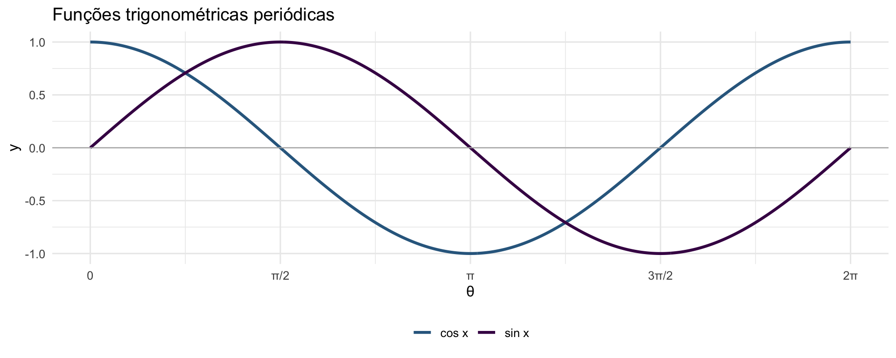

library(ggplot2)
library(patchwork)
base_t <- theme_minimal(base_size = 12)
x <- seq(0, 2*pi, length.out = 500)
df <- data.frame(
x = rep(x, 2),
y = c(sin(x), cos(x)),
func = rep(c("sin x", "cos x"), each = 500)
)
ggplot(df, aes(x, y, color = func)) +
geom_line(linewidth = 1.1) +
geom_hline(yintercept = 0, color = "gray70", linewidth = 0.4) +
scale_x_continuous(
breaks = c(0, pi/2, pi, 3*pi/2, 2*pi),
labels = c("0", "π/2", "π", "3π/2", "2π")
) +
scale_color_manual(values = c("sin x" = "#440154", "cos x" = "#31688e")) +
labs(title = "Funções trigonométricas periódicas",
x = "θ", y = "y", color = NULL) +
base_t + theme(legend.position = "bottom")